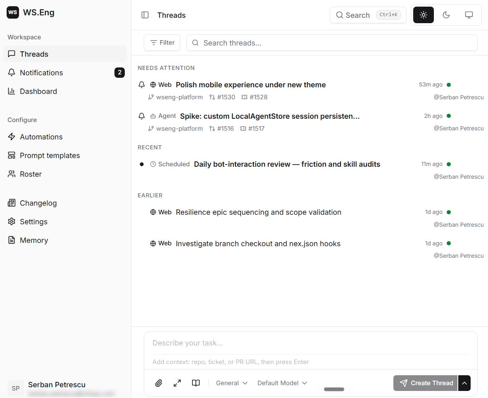
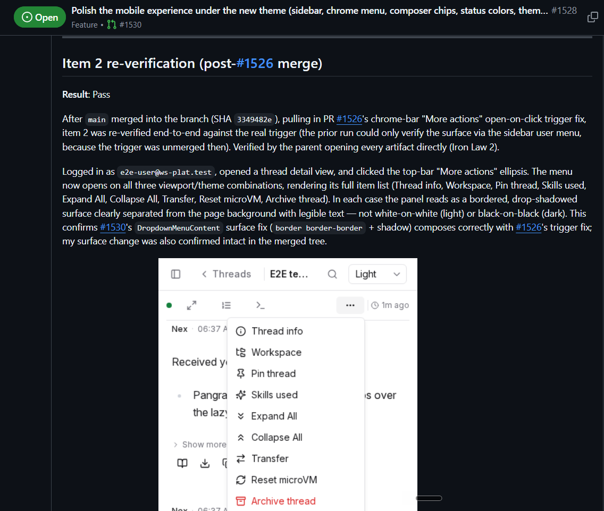
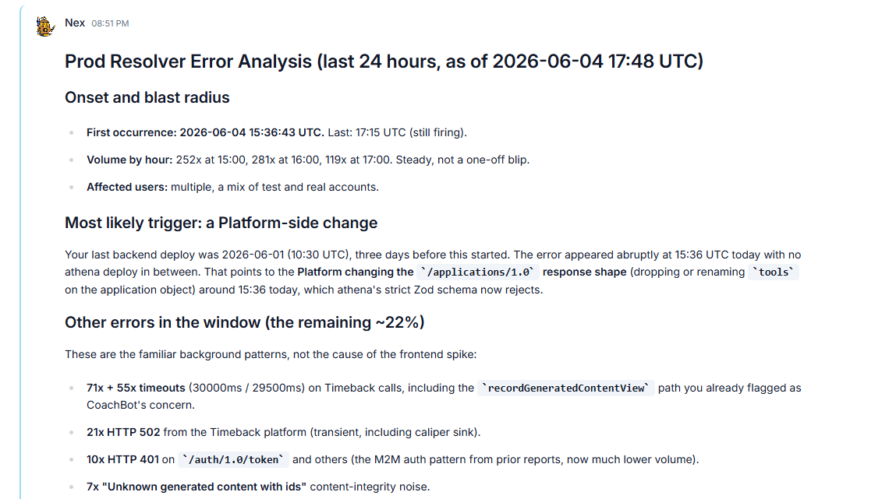
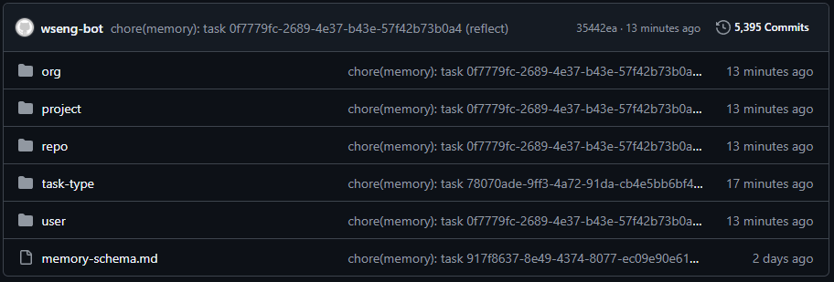
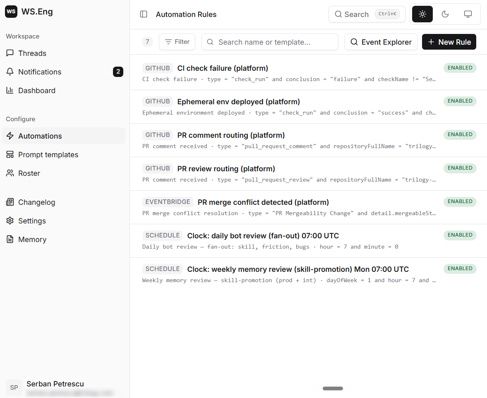
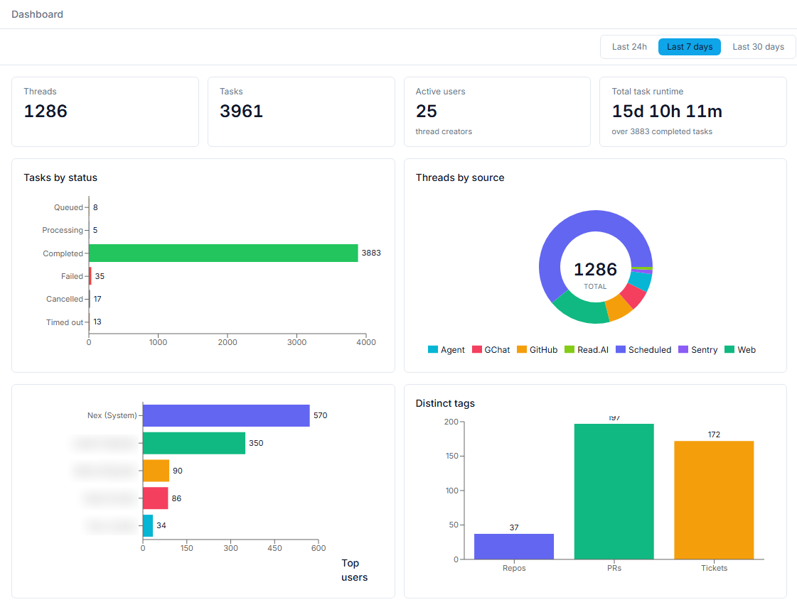

From writing code, to running the system that writes it.
WS.Eng · Serban Petrescu · June 2026
Who we are
WS.Eng, a software engineering department at Trilogy
I run WS.Eng. We build educational software products, pairing deep engineering expertise with AI to ship fast.
We are builders. Engineers own products end to end: design, build, deploy, and operate, with routine implementation delegated to agents.
Small teams, vertical ownership. At most three engineers per product, each owning their area and responding first to its bugs and operational issues.
We build the system that builds the software. Skills, tests, and constraints are the primary work; agents execute with speed, engineers bring judgment on the decisions that matter.
One capable engineer with AI outproduces ten without it. We hire and structure for that profile, aiming at 10x.
Model: engineers design and maintain the mechanism that ships software; agents do the routine implementation. Output: greenfield products plus AI-based extensions, delivered daily by teams of three or fewer. Nex is the department's own tooling.
Where we were
The engineer held the initiative
Agentic coding lived inside the IDE. Every change started with an engineer opening the editor and prompting an agent step by step.
Cursor's agent window unlocked some parallel work. An engineer could run several agents and editor windows at once, but each one still started by a person.
The initiative stayed with the engineer. Nothing progressed unless someone opened a session, so no work happened overnight, on weekends, or while the team was in meetings.
Spec-driven practices were strong. Written specs, recorded decisions, and an explicit plan came before any code.
Testing was ad hoc. Automated coverage was patchy and exploratory testing was left to each engineer's judgement, so quality depended on who picked up the ticket. The one firm rule was a demo video on every change.
Practice: spec-driven development, documented ITDs, plans as artifacts. Gap: no system-level automation; a human triggered every task, and test depth varied per engineer.
Where the industry is heading
The engineer steps onto the loop
Long-running agents are becoming the norm. A task now runs for hours or days, so an agent builds a whole feature rather than a snippet.
Building software is being democratized. The same frontier models are open to everyone, so a small team can build what once needed a platform org.
The hard part is the primitive. The models and the low-level harness are where the labs spend billions; that layer is a commodity you rent.
The value is in the loop you build on top, so build your own. The edge comes from fitting a long-running loop to your own repositories, CI, and alerts: a tuned loop can assume TypeScript only and one cloud, which a generic product cannot.
"You no longer babysit the agent that writes the code. You build the system that writes the code."
Cursor roadmap meeting, June 2026
Convergence (2026 industry reports): background agents on cloud infra, self-driving codebases,
planner / worker / judge loops, durable sessions, event and schedule triggers. The engineer moves from in-the-loop to on-the-loop.
Introducing
Nex: an engineer that never sleeps
Give it an objective. It plans, builds, tests, ships, and handles what comes next.
It owns a task end to end. From a plan, to the implementation, to a pull request with evidence, to the follow-up after review.
It starts work on its own. A meeting, an alert, a failed build, or a schedule begins a task with no person in the loop.
It already runs at real volume. Built by one person at about an hour a day, it opens hundreds of pull requests a month.

Harness: Cursor SDK (programmatic Agent.create / Agent.resume). Compute: AWS Bedrock AgentCore microVMs, warm per conversation (~2s warm, ~7s cold). Orchestration: AWS Step Functions with task-token wait and resume.
The principle
Put the intelligence in the middle
The design bet behind Nex: do not script the work. Put the model at the center, hand it tools and skills, and let it figure out the rest.
Tools, not hard-coded flows. The model is given a set of commands and decides which to run and in what order, so a new situation does not need new wiring.
Mostly command-line tools, some MCP. CLIs are the main interface because they are easy to add, self-describing, and run anywhere; MCP is used only for tools that have no CLI, such as Mixpanel.
Skills carry the know-how. Written guides capture the team's way of doing each job, so the model follows proven steps instead of guessing from scratch.
One custom CLI is the bridge to the platform. A single tool gives the agent everything: data, tickets, pull requests, memory, and evidence. Adding a capability means adding a command.
Tool surface: the wsai CLI (17 command groups) is the agent's primary interface; MCP is kept for IDE integration. Skills: 36 written SKILL.md guides the agent loads per task. Principle: LLM-centered architecture, CLI chosen over MCP for scale and portability.
The foundation
Autonomy is earned with rigor
You can only let an agent run on its own if you trust its output without reading every line.
Patterns were fixed from day one. The architecture and conventions were set before the agent scaled up, so every change lands in the same shape instead of drifting.
Nex writes its own tests, at every layer. Each change ships with unit, integration, database, API, and end-to-end tests, all written by the agent.
Quality gates are turned up to the maximum. Strict linting, dependency and package.json rules, and custom in-repo rules all run automatically, catching mistakes without a human reviewer.
So the author rarely reads the code. The gates catch what a line-by-line review would, which is why the platform's own author trusts its merges without reading most of the diff.
Test layers (all agent-written): Vitest unit, database integration, an HTTP API suite, and Playwright end-to-end specs. Lint: maxed-out ESLint with import / dependency / package.json rules, plus a custom in-repo lint plugin. Gate: everything runs in CI before a merge is allowed.
Feature: Delivery
It owns the work, from plan to green build
Request in, plan out. Nex turns a request into a written plan, then implements it on its own branch and opens a draft pull request.
It fixes its own broken builds. When CI fails, Nex reads the failing logs and pushes a fix to the same PR, so a red build does not sit waiting for someone to reassign the ticket.
It closes the review loop. When a reviewer or Cursor's Bugbot leaves comments, Nex makes the change, replies, and resolves the threads.
It stays on one task as long as the work takes. A task runs across hours and multiple events, resuming exactly where it stopped instead of starting over.
"Last night I said: pick 10 tickets and do them in parallel. All tested. I merged half; the rest resolved their own conflicts automatically."
WS.Eng Engineer
Trigger: GitHub webhooks (CI checks, review comments) matched by user automation rules. Resume: Step Functions wakes the waiting agent via task token; the prior agent session is resumed, not restarted.
Feature: Testing
It tests its own work and shows the proof
It verifies behavior by hand. On top of the automated suites, it runs the change and checks it the way a person would before asking for a merge.
It covers every surface a user touches. APIs end to end, the web UI, and the desktop (Electron) app.
It records the evidence. Screenshots and short videos from the run are attached to the work, so a reviewer sees proof, not a claim. The mandatory demo video is now produced by the agent.

Evidence posted by Nex on the ticket it worked
API: Bruno CLI transcripts. Web + desktop UI: Playwright (Chromium baked into the worker image), Electron driven over CDP. Evidence: uploaded to hosted media and linked back into the thread and PR.
Feature: Investigation
It investigates production like an on-call engineer
It picks up issues reported in chat. When someone flags a problem in Google Chat, Nex reads the thread, replies in place, and starts digging.
It looks where an engineer would. Sentry error reports, read-only SQL and Mixpanel usage (for example, how many users completed a flow), and AWS logs.
Then it acts. It writes up the root cause and, when the fix is clear, opens the pull request for it.

Access: AWS via cross-account read-only IAM roles (sts:AssumeRole), set up with a single role grant, no credentials shared. Tools: Google Chat read/reply, Sentry webhooks, read-only SQL, Mixpanel product analytics (via MCP), CloudWatch log anomaly detection.
Feature: Memory
It remembers, and gets sharper over time
It keeps durable notes about your world. What it learns about each person, project, and repository persists from one task to the next.
Context loads itself at the start of each task, so it does not rediscover the same facts on every run.
It consolidates every night. A nightly "dream" pass merges what it learned and prunes stale notes, so memory stays useful instead of noisy.

Persistence: a dedicated git repository, one branch per environment, so memory is versioned and reviewable. Scopes: org / project / repo / user / task-type. Dream: nightly consolidation at 03:00 UTC with per-scope size budgets.
Feature: Triggers
It starts its own work
Most of Nex's work starts without anyone asking. It reacts to what happens around the team.
Meetings. A call transcript becomes tickets, and Nex starts on the ones clear enough to implement.
Alerts. A Sentry alert or a CloudWatch log anomaly opens an investigation on its own.
Failures. A failed build wakes the same agent that produced the change.
Schedules. Recurring jobs poll support tickets and scan the team's work for friction, then improve the agent's own skills.

Event sources: GitHub, Read.AI (meetings), Google Chat, Sentry, EventBridge, clock. Crons: a schedule ticker every 30 min drives support-ticket sync, skill scanning, the nightly dream, idle reflection, and anomaly / PR-mergeability polling.
By the numbers
What one engineer built, in evenings
9+5
apps and shared libraries
36
skills the agent can use
10
task types, plan to dream
1
engineer, about an hour a day
The initiative has moved. The engineer sets direction; Nex does the work and reports back.

Live platform dashboard
Backbone: a relational database tracks repositories, AWS accounts, contributors, and Google Chat spaces. Harness: Cursor SDK. Compute: Bedrock AgentCore. Memory: git.
Roadmap, Q3 2026
From conversations to a tracked backlog
More independent testing. The agent validates its own work more deeply, so reviewers check decisions, not diffs.
More auto-merging. Low-risk changes that pass every gate merge themselves; a human stays in the loop only where it matters.
Better judgement on when to ask. It raises the decisions that need a person and proceeds on the rest. This is the area that still needs the most work.
From threads to tickets and milestones. Drive a ticket through its phases from one place, instead of jumping between GitHub, AWS, and chat.
TicketPhaseAction
#1542 Roster APIPlanned
#1517 Session persistenceImplementing
#1530 Mobile themeIn review
#1526 Chrome-bar fixMerged
Direction: one board for every work unit, with the next phase one click away.
Q3 outcomes: deeper self-validation to cut review burden; a milestone and work-unit view replacing chat threads; skill iteration loops measured in hours; one source of truth across GitHub, AWS, and chat.